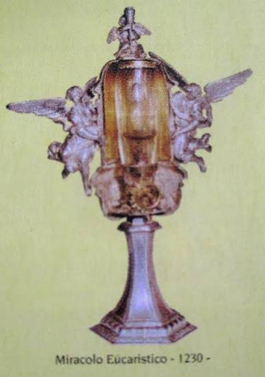
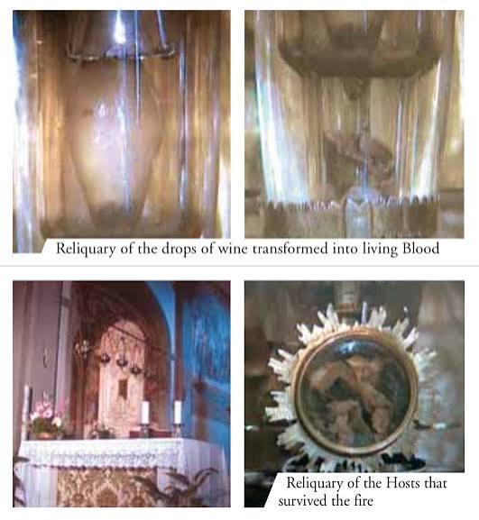
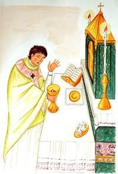

The Church of Saint Ambrose (Chiesa di Sant'Ambrogio) in Florence, Italy, houses the preserved relics of two distinct Eucharistic miracles that occurred 365 years apart, in 1230 and 1595.
On December 30, 1230, a priest accidentally left consecrated wine inside the chalice. The following day, he discovered it had transformed into living, coagulated blood. This blood remains incorrupt after nearly 800 years and is kept inside a white marble tabernacle.
On Good Friday in 1595, a fire broke out in the church. Six fragments of consecrated Hosts fell onto a flaming carpet. Despite the intense heat, the fragments were recovered entirely intact, unburned, and fused together.
Both reliquaries are displayed together for public adoration every year in May during the Forty Hours devotion at the Church of Saint Ambrose in Florence.